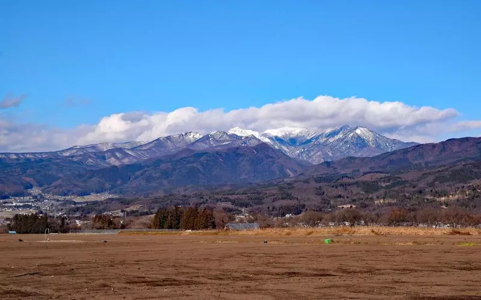

関東編 - ツーリングスポット
奥多摩周遊道路

奥多摩地域の一番の目玉である奥多摩湖は、巨大な小河内ダムによって造られた広大な湖であり、その湖畔を走る周遊ルートが「奥多摩周遊道路」である。昭和48年に開通し、当初は有料の自動車専用道路「奥多摩有料道路」として運営されていたが、平成2年より無料開放され、現在は都道206号線として地域の生活道路としても利用されている。総延長19.7kmのほぼ全域が山岳ルートで、原付バイクも通行可能である。
おすすめポイント:
- 爽快な山岳ワインディング
- 自然の美しさと絶景スポット
- 歴史的背景とツーリングの魅力
アクセス情報:
- 住所: 東京都西多摩郡奥多摩町檜原村
- 最寄りIC: 中央自動車道 八王子IC
- 駐車場: 無料駐車場あり
いろは坂

「いろは坂」は、その豪快なワインディングと絶景の展望で、多くのライダーや観光客を魅了する名道である。歴史的な古道を走るという貴重な体験とともに、新緑や紅葉の美しい風景が楽しめるこの場所は、一度は走っておきたいツーリングスポットである。新緑の春や紅葉の秋には、特に訪れる価値がある。。
おすすめポイント:
- 豪快なアップダウン
- 絶景の景色
- 一方通行で異なるルート
アクセス情報:
- 住所: 栃木県日光市
- 最寄りIC: 日光宇都宮道路 清滝IC
- 駐車場: 無料駐車場あり
上毛三山パノラマ街道

群馬県の自然美を満喫できるツーリングロード、「上毛三山パノラマ街道」は、赤城山、榛名山、妙義山をつなぐ絶景の山岳道である。この道路は全長約45kmで、各山の魅力を体感しながら、バイクでの爽快な走行が楽しめる。 上毛三山は古くから信仰の対象として親しまれてきた山々で、赤城山の火山湖、榛名山の双耳峰、妙義山の奇岩群など、自然の美しさが凝縮されたスポットである。上毛三山パノラマ街道はこれらの山々を巡る最高のルートであり、ドライブやツーリングの魅力が詰まっている。
おすすめポイント:
- 美しいワインディングロード
- 赤城山の絶景スポット
- 豊かな自然
アクセス情報:
- 住所: 群馬県前橋市苗ヶ島町
- 最寄りIC: 北関東自動車道 伊勢崎IC
- 駐車場: 無料駐車場あり
大観山展望台

「大観山展望台」は、アネスト岩田ターンパイク箱根の終点に位置する絶景のビュースポットである。360°のパノラマビューで芦ノ湖越しに富士山や他の山々を楽しむことができる他、アネスト岩田スカイラウンジでの食事やコーヒータイムも楽しめる。四季折々の風景を堪能しながら、ツーリングやドライブの休憩に訪れるのに最適な場所である。
おすすめポイント:
- 四季折々の自然が楽しめる
- 道路状況が良く、快適な走行が可能
- 富士山をバックにした写真スポットが多数
アクセス情報:
- 住所: 神奈川県足柄下郡箱根町
- 最寄りIC: 箱根新道 芦ノ湖大観IC
- 駐車場: 無料駐車場あり